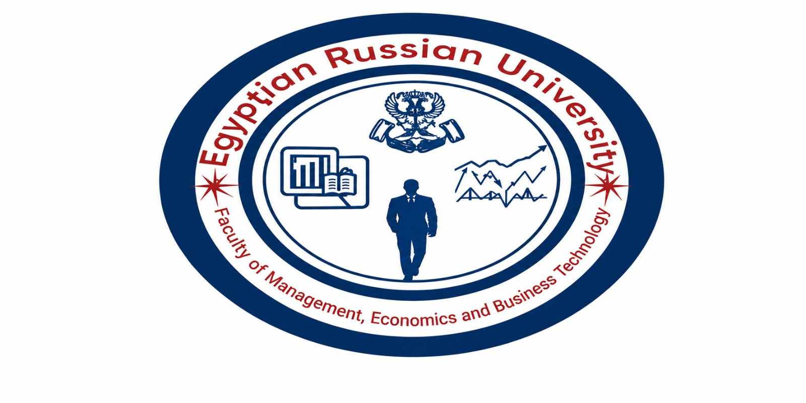
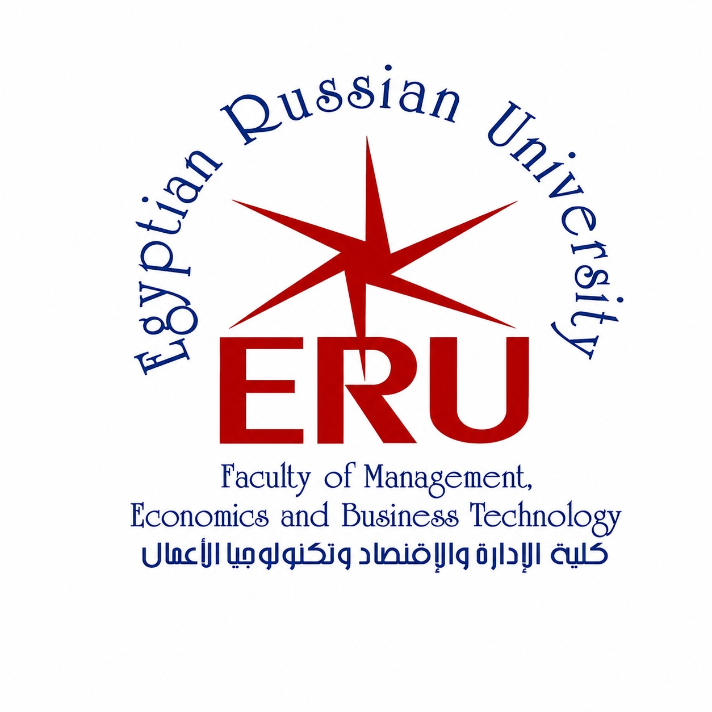

كل حاجة محتاج تعرفها عن الـ 4 تخصصات، فرص الشغل، الصعوبة، وإزاي تنجح في الكلية
Level 1: من 0 ساعة
Level 2: بعد 34 ساعة
Level 3: بعد 72 ساعة
Level 4: بعد 108 ساعة
التخرج: بعد 140 ساعة
لازم تسجل المادة بعد ما تكمل الـ Pre-requisite بتاعتها. مفيش تسجيل عشوائي. الإرشاد الأكاديمي اختياري بس استخدمه!
لازم تحضر 75% على الأقل في كل مادة. لو غبت أكتر من 25%، ممنوع تدخل الامتحان النهائي!
حد النجاح الأدنى 50% (تقدير D-). لو جبت أقل من كده، راسب في المادة دي. الامتحان النهائي ساعتين لكل مادة.
بتختار تخصصك في أول المستوى الثالث، بعد ما تكمل 65 ساعة معتمدة على الأقل.
في فصل صيفي اختياري لمدة 6 أسابيع. تقدر تسجل فيه بحد أقصى 9 ساعات. استخدمه تعدي أسرع!
دوّر على المواد الـ Elective الأسهل. اكمل الـ Pre-requisites بدري. خلي الـ GPA فوق 3.0 من أول ما تقدر.
لغة التدريس إنجليزي بالكامل. هتاخد روسي 1 و2 إجباري (HM 001-002). ركّز في الإنجليزي من أول يوم!
Microeconomics, Mathematics, Management, Info Systems, Computer Science, Programming Intro, Statistics, Financial Accounting, English 1&2
Database Systems 1&2, OOP, System Analysis, Business Analytics Intro, Statistics 2, Managerial Accounting, Finance, Marketing, Russian 1&2
هنا بتتفرع المسارات الأربعة. كل تخصص بياخد مواد مختلفة حسب مساره + مواد مشتركة زي Data Structures, OS, Digital Marketing
مواد تخصصية متقدمة، مشروع التخرج (في جزءين 1 و2)، Scientific Research Methodology إجباري للكل
الـ BA هو تخصص تحليل البيانات – بتتعلم إزاي تجمع داتا ضخمة وتحللها وتطلع منها insights تساعد الشركات تاخد قرارات أفضل. هو مزيج من الإحصاء والبرمجة والأعمال. ده من أكتر التخصصات طلبًا في السوق المصري والعالمي دلوقتي.
الـ MIS هو التخصص الأشمل في تكنولوجيا الأعمال. بتتعلم تصميم وإدارة الأنظمة التقنية داخل الشركات والمؤسسات. بياخد منك برمجة (Web & Mobile) وداتابيز وشبكات وإدارة مشاريع. هو الأقل صعوبة من BA وDBF وفرص شغله كتير وواسعة.
الـ MKI هو تخصص فريد بيجمع بين التسويق الرقمي والذكاء الاصطناعي. مش تسويق تقليدي – ده تسويق مبني على الداتا وتحليل سلوك المستهلك باستخدام الـ AI. ده من أحدث التخصصات وفيه طلب متنامي بسبب붐 الـ Digital Marketing والـ E-Commerce في مصر.
الـ DBF هو أحدث وأجرأ تخصص في الكلية. بيجمع بين البنوك الرقمية والـ Blockchain والـ Cryptocurrency وإدارة المخاطر المالية. الكورسات زي Blockchain, Cryptography, Digital Banking – دي مواد مستقبلية جداً ومطلوبة عالمياً. بس الصعوبة عالية عشان فيه مالية وتقنية متخلطين.
| التخصص | الصعوبة | الطلب الحالي | المستقبل | الراتب | التحيز نحو |
|---|---|---|---|---|---|
| 📊 BA Business Analytics |
★★★★☆ صعب |
🔥 عالي جداً | 💎 ممتاز | #1 الأعلى | Data Science, BI, Analytics |
| 🖥️ MIS Mgmt Info Systems |
★★★☆☆ متوسط |
📈 عالي | 👍 كويس | #2 كويس | Web Dev, Mobile, IT |
| 📣 MKI Marketing Intelligence |
★★☆☆☆ الأسهل |
📊 متوسط-عالي | 📈 متنامي | #3 متوسط | Digital Marketing, Brands |
| 💳 DBF Digital Banking & Fintech |
★★★★★ الأصعب |
🚀 نامي | 💎 مستقبلي جداً | #1-2 مستقبلاً | Blockchain, Crypto, Banks |
MIS الأول عندك Web-Based Applications و Advanced E-Commerce.
ثانياً: MKI فيه Digital Marketing.
BA وDBF أقل تركيز على الـ web.
MIS الأول عندك مادة Mobile Applications كاملة.
الباقي مفيهومش mobile بشكل مباشر.
DBF الأول عندك Cryptography, Data Security, Blockchain.
BA ثانياً عنده Data Security.
MIS فيه Data Security برضو.
BA الأول عندك Machine Learning + AI Intro + Big Data + Analytics.
MKI ثانياً عندك AI Intro.
DBF فيه Data Analytics بس مش متخصص في AI.
| التقدير | % | النقاط | التقدير | % | النقاط | |
|---|---|---|---|---|---|---|
| A+ | 96-100 | 4.0 | C+ | 72-<76 | 2.3 | |
| A | 92-<96 | 3.8 | C | 68-<72 | 2.0 | |
| A- | 88-<92 | 3.5 | C- | 64-<68 | 1.7 | |
| B+ | 84-<88 | 3.2 | D+ | 60-<64 | 1.4 | |
| B | 80-<84 | 2.9 | D | 56-<60 | 1.2 | |
| B- | 76-<80 | 2.6 | D- | 50-<56 | 1.0 | |
| F | <50 | 0.0 | ||||
بتحب الأرقام والإحصاء، مش خايف من Python وSQL، عايز تشتغل في Data Science ومستعد لصعوبة أكاديمية عالية مقابل راتب أعلى.
بتحب تعمل مواقع وتطبيقات، عايز تدخل سوق الشغل بسرعة، بتحب تكون between التقنية والإدارة، وعايز مرونة في فرص الشغل.
شغوف بالتسويق الرقمي والـ Social Media، عندك حس إبداعي، مش بتحب الكود الكتير، وعايز تشتغل في مجال الـ E-Commerce والبراندات.
مفتون بالـ Blockchain والـ Crypto والمال الرقمي، مستعد تذاكر بجد، وعايز تركب موجة الـ Fintech اللي ماشية تصعد في مصر والعالم.
#1 MIS → فرص أكتر وأسرع
#2 BA → طلب عالي جداً
#3 MKI → سوق تنافسي
#4 DBF → نامي ومستقبلي
#1 MKI → الأسهل
#2 MIS → متوسط
#3 BA → صعب
#4 DBF → الأصعب
#1 BA → AI & Data يطلع
#2 DBF → Fintech ينمو
#3 MIS → ثابت وكويس
#4 MKI → تنافسي أكتر
#1 BA/DBF → الأعلى
#2 MIS → كويس جداً
#3 MKI → متوسط-كويس
(Freelance يغير كل الحسابات!)